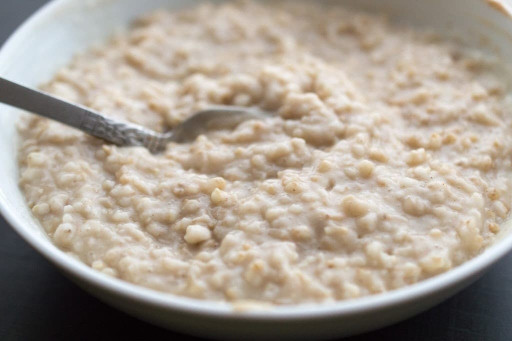

Instant Pot High Protein Oatmeal
Return Home

Description
503 calories, 38.9g protein
A simple high protein oatmeal recipe that can be made in an Instant Pot.
Ingredients
- Steel Cut Oats
- Textured Vegetable Protein (TVP)
- Spinach
- Salt
- Water
Steps
- Add 1/2 cup of steel cut oats
- Add 1/2 cup of TVP
- Add 1 teaspoon of salt
- Add 10 leaves of spinach
- Add 2 cups of water
- Push the porridge button on the instant pot
- Cook on high pressure for five minutes
- Open pressure valve, stir and serve